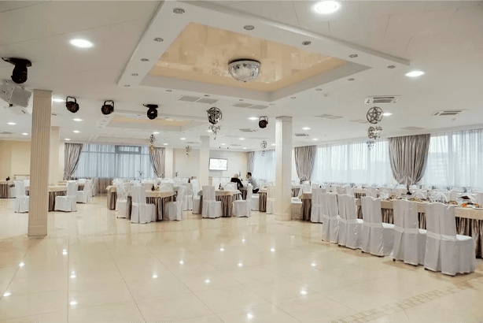
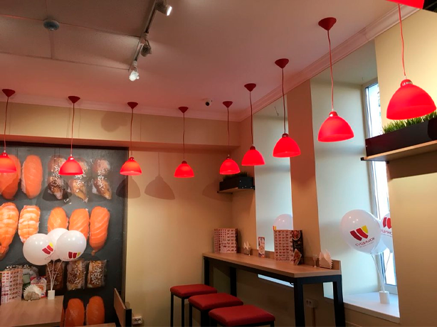

Где покушать?
Ресторан «Орбита»

Повара ресторана приготовят для вас изысканные блюда как белорусской так и европейской кухни, а расслабляющая Lounge-музыка создаст особенную атмосферу уюта.
Ресторан паназиатской кухни «Суши Wok»

Акцент сделан на широкий ассортимент суши, лапшу и азиатские супы. Хороший вариант, когда бюджет ограничен, а хочется хоть немного прикоснуться к прекрасному.
Пиццерия «Roma»

Здесь вы можете попробовать уникальные виды пиццы и другие блюда итальянской кухни. Особого внимание достойны блюда национальной белорусской кухни.